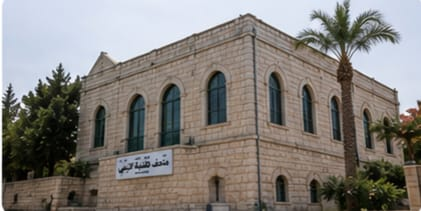
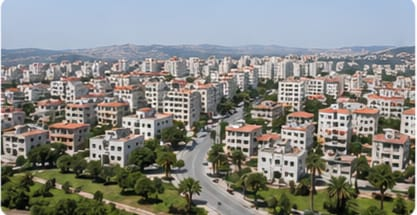
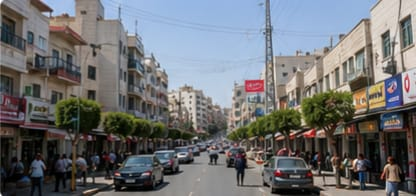
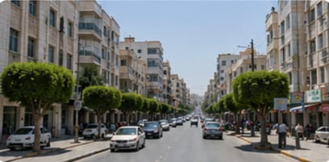
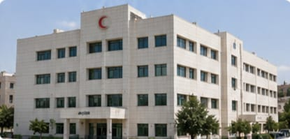
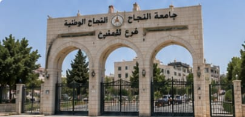
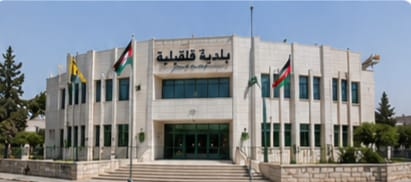
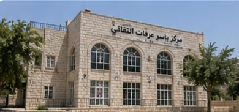
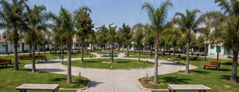
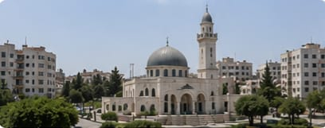

قلقيلية: خضرة الأرض وبوابة الصمود
"نأخذكم في إطلالة على مدينة قلقيلية التي تعانق السهل الساحلي، لنستكشف تاريخها العريق المتمثل في متاحفها، وحيوية شوارعها وأسواقها المركزية التي تنبض بالحياة رغم التحديات."

متحف قلقيلية التراثي
متحف تاريخي يعرض أدوات الحياة القديمة والمقتنيات التراثية والصناعات التقليدية التي تعكس تاريخ المدينة وتراثها العريق.

منظر عام لمدينة قلقيلية
تقع مدينة قلقيلية في قلب السهل الساحلي، وتتميز بموقعها الاستراتيجي وحيويتها التجارية والزراعية، وجمال طبيعتها وموقعها القريب من البحر.

السوق المركزي
سوق شعبي قديم يعكس أصالة المدينة وتراثها التجاري، ويضم محلات متنوعة للمواد الغذائية والملابس والأدوات المختلفة.

شارع جورج حبش
أحد الشوارع الرئيسية والحيوية في المدينة، يربط بين مختلف الأحياء والمناطق التجارية والخدمية.
قلقيلية: مؤسساتٌ رائدة ومنارةٌ للعطاء
"استكشاف لأبرز المرافق التعليمية والصحية والإدارية في قلقيلية، والتي تشكل الركائز الأساسية لخدمة المجتمع وتعزيز صمود المدينة وتطورها المستمر."

مستشفى قلقيلية الحكومي
المستشفى الحكومي الرئيسي في محافظة قلقيلية، يقدم خدمات صحية شاملة لسكان المدينة والقرى والمناطق المجاورة.

جامعة النجاح الوطنية - فرع قلقيلية
إحدى فروع جامعة النجاح الوطنية في الضفة الغربية، تقدم برامج أكاديمية متنوعة للطلبة في مختلف التخصصات.

بلدية قلقيلية
الجهة المسؤولة عن إدارة شؤون المدينة وتقديم الخدمات للمواطنين والعمل على تطوير البنية التحتية.

مركز ياسر عرفات الثقافي
مركز ثقافي يعنى بنشر الثقافة والفنون والتراث الفلسطيني، ويستضيف الفعاليات والمعارض والأنشطة الثقافية المختلفة.
قلقيلية: روحُ المجتمع ونبضُ الحياة
"نلقي الضوء على الجوانب الروحية والترفيهية التي تجمع أهالي قلقيلية، من رحاب المساجد العامرة والحدائق الخضراء، وصولاً إلى لحظات الفخر بالخريجين والفعاليات الوطنية الجماهيرية."

حديقة السلام العامة
متنفس طبيعي لأهالي المدينة، تضم مساحات خضراء وألعاباً للأطفال ومناطق للجلوس والمشي وممارسة الأنشطة الترفيهية.

مسجد عمر بن الخطاب
أحد المساجد الكبرى في المدينة، يتميز بتصميمه المعماري الجميل ومكانته الدينية والاجتماعية بين أهالي قلقيلية.

تخرج طلبة جامعة النجاح - فرع قلقيلية
لحظة فخر واعتزاز بنجاح الطلبة وتفوقهم، ومساهمتهم في بناء المجتمع وتنمية الوطن.

فعالية جماهيرية في ساحة البلدية
ساحة مركزية تقام فيها الفعاليات الوطنية والاجتماعية والثقافية، وتشهد مشاركة واسعة من أبناء المدينة.